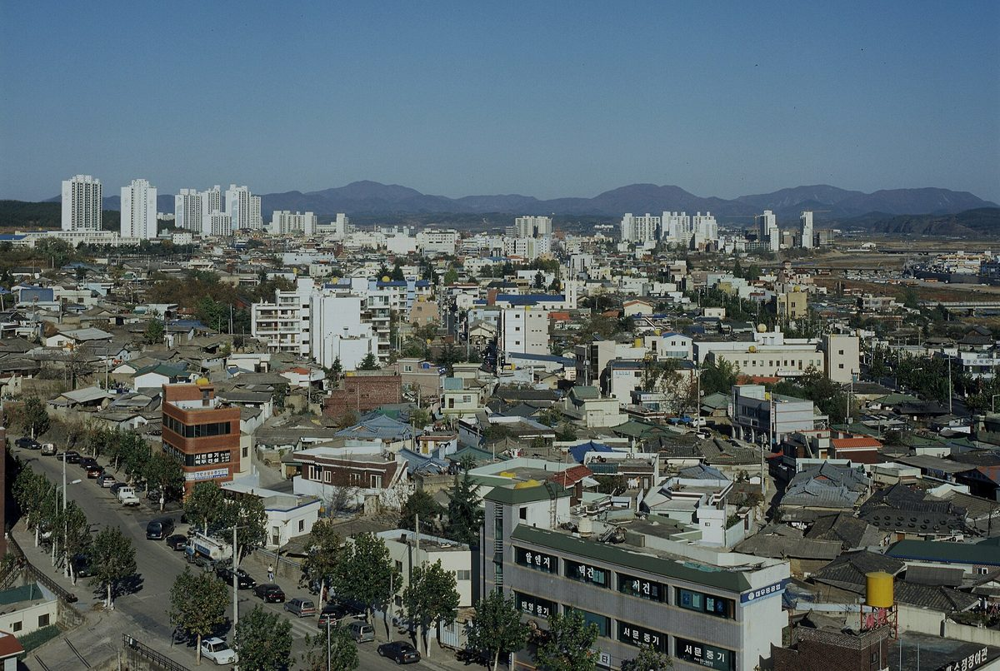
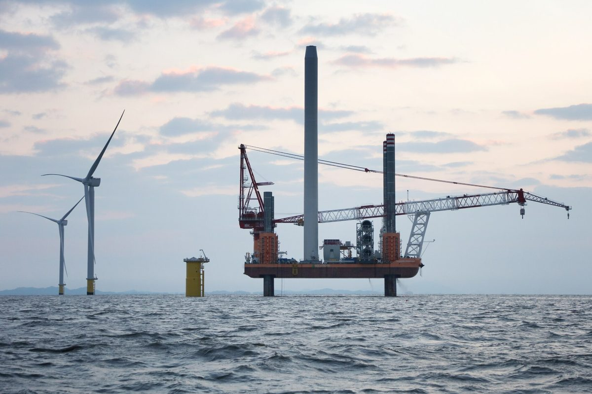
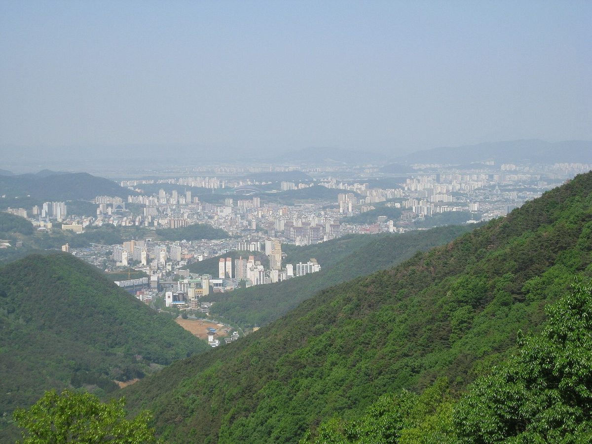

지역
제주 한림해상풍력 인근 3개 마을, 총사업비 4.7% 투자해 배당…추자해상풍력은 '주민 1순위·도민 2순위' 투자 구상
기존 풍력은 당기순이익 17.5%를 공유화 기금으로…추자 재공모는 연 1,300억 원 고정 조건 대신 다른 방식 검토, 2.37GW 전력 육지 송전엔 해저연계선 900MW 한계

영암군, 삼호 미암 간척지 약 1,700만㎡에 2GW 이상 재생에너지 집적화단지 추진…토지소유자 등 200여 명과 간담회
공공 주도 입지·마스터플랜, 공모로 사업시행자 뽑아 주민참여 비율·수익 환원 규모 심사 계획…동의서는 정부 지정 신청 자료, 개발 이익은 주민참여형 기본소득 재원으로

함평 재생에너지 특구 추진위, 정부·국회에 '군민주도형 국가 에너지생산 선도지역' 지정 요구…특별법 등 4대 과제 제시
군 전체를 발전·ESS·송변전·산단을 함께 계획하는 국가전략 공간으로 묶자는 구상…장기 8GW, 입지 기피시설도 받겠다며 11월 16일 서명·건의서 전달 예정, 특구·특화지역·국가산단 모두 요구 단계

국회서 동 지역 햇빛소득마을 요구 나오자 제주 동 지역 문의 잇따라…출력제어 탓 마을마다 억대 ESS 부담이 걸림돌
제주도 관계자, 행안부가 의견 받는 중이며 연내 기준 발표 예정이라고 전해…확대 여부는 한전 협의 남아 예측 일러, 애월 용흥리·남원 위미1리 선정·3차 공모 이달 말 마감

전남연구원 신안 발전 구상 보고서, 햇빛연금·바람연금을 기본소득형 에너지복지로 키우자 제안…햇빛연금 2025년 75억 원에서 2030년 130억 원 목표
해상풍력 2030년 3.5GW·2035년 8.2GW, 태양광 2030년 1,200MW 목표 담아…주민참여 협동조합·지역활성화펀드 연계, 권역별 해상풍력 유지보수 거점·RE100 산업단지도 제시

새만금희망태양광 99MW, 주민참여 두 갈래 검토했지만 전북도민 펀드는 금감원 지역 제한 지적에 막혀
총사업비 1,575억 원, 2021년 12월 상업운전…반경 1km 주민 약 63억 원 규모 주민법인 투자 추진, 회사는 연 6억6,100만 원 지역 기부·전북 중고생 장학금 설명

제주도, 2035년까지 해상풍력 5GW 개발하고 바람연금·햇빛연금 확대 구상
위성곤 지사 취임 100일 인터뷰서 추자해상풍력 2GW 포함 개발, 재생에너지 기반 그린 AI 데이터센터 조성 제시…연금 확대 규모·재원은 밝히지 않아

다대포 해상풍력 사업자, 사하구 청년회와 청년 고용·지역 공급망 협약…99MW 고정식 해상풍력
부산해상풍력발전, 교육·훈련·취업 연계와 관광자원화 추진…사업자 측 주민조사 찬성 56.7%·반대 26.7%, 고용효과 1,112명 분석, 주민 지분·배당 방안은 협약에 없어

인천 주안·부평산단, 정부 에너지자급자족 인프라 공모 선정…공장 지붕·주차장에 태양광 10MW
2029년까지 국비 200억 원 포함 320억 원 투입해 연 1만2,400MWh 생산 계획…발전 수익으로 '햇빛소득 기금' 11억 원 만들어 입주기업·근로자에 돌려준다는 구상

고흥군, 2030년까지 단독주택 3곳 중 1곳에 태양광…2만7,000동 중 9,000동 목표 주택 태양광 보급 3033 사업
9월 현재 보급률 약 23%·6,200여 가구…올해 융복합 지원 5개 읍면 42억9,800만 원, 주택지원 100가구 4억7,600만 원

영천시의회 상임위, 태양광 주거밀집지역 이격거리 300m→100m 완화 조례안 수정 가결
산업건설위, 도로 이격거리 기준도 삭제…적용 대상은 '10호 이상'에서 '5호 이상'으로 고쳐 통과, 재생에너지법 시행령 개정에 맞춘 조례 정비

전남연구원 "진도에 해상풍력 3.6GW·태양광 1.4GW"…주민 지분 참여 '진도형 에너지 연금' 구상
'진도군 발전 구상' 보고서, 영농형 태양광 2035년 1GW·수상태양광 최대 400MW 제시…2031년부터 해상풍력 수익 복지·주거·교통에 재투자 구상

함평 재생에너지 특구 추진위 "345kV 변전소 못 잡으면 8GW·RE100 산단 2년 넘게 늦어져"…27일 기자회견·11월 3일 결의대회 예정
오민수 상임대표 군민 호소문, 변전소 확보를 4대 과제 맨 앞에…심의 결과는 추진위 설명으로 12월 말~내년 1월 초 전망, 특구·변전소·산단은 정해진 것 없어

보령시, 장동혁 국민의힘 대표와 정책간담회…공공주도 태양광·해상풍력 집적화단지 육성 건의
석탄화력 단계적 폐쇄 대응 제도 개선도 요청…폐지지역 특별법 지원 소급 적용·안보전원발전기 지원 근거·미래대응기금 배분 기준에 피해 영향 반영

광주 전력자립률 9.3%·전남 197.9%로 21.3배 격차…광주기후에너지진흥원, 햇빛·바람연금 참여 자격·배분 기준 명확히 해야
통합 이전 2023년 기준 분석…두 지역 지역에너지계획 133개 사업은 기간·지표 달라 단순 통합 어려워, 2035년 재생에너지 설비 목표 합계 3만8,858MW

화천군, 파로호 수면·군부대 유휴부지 태양광 수익 나누는 화천형 햇빛연금 구상…군민 1인당 월 10만~15만 원 목표
김세훈 군수 취임 100일 인터뷰서 이르면 3~4년 안 지급 목표 밝혀…설비 용량·사업비·사업 주체는 아직 공개 안 돼, 농어촌 기본소득 월 15만 원과 합쳐 월평균 25만~30만 원 구상

신안 자은 해상풍력 96MW 상업운전 1년 5개월…8.2GW 단지 밑그림 속 송전선로 경유지 주민 수용성이 숙제
우이도~임자도 1만2,000㎢ 해역에 고정식 500기 10년 안에, 흑산도 해상엔 10GW 부유식 추진…임자~신장성 송전선로 지나는 함평·영광·장성 민원 부담

인천햇빛발전협동조합, 공영주차장 태양광 수익 시민배당·지역환원 조례 요구
1,000㎡ 이상 공영주차장 태양광 의무화 뒤 인천시·iH 약 40MW 사업 추진…조합은 시민펀드 넘어 협동조합의 시공·소유·운영 참여 보장 주문

영덕군 에너지종합계획 중간보고…산불 피해지에 200MW급 공공주도 풍력, 햇빛소득마을 조성 검토
18개소 631.6MW 풍력에 해상풍력 입지 발굴·태양광 보급 더해…주민 참여 넓혀 발전 이익 군민에 돌리고 개발이익 공유 확대, 12월 최종안 확정

미국 뉴욕주 리버헤드, 닫은 매립장 위 태양광 7MW·배터리 13.68MWh 완공 앞둬…요금 크레딧 60%는 주민·소상공인 120여 곳 몫
읍은 땅 빌려주고 크레딧 40%와 연 임대료 15만 달러 이상 받아…민간 개발사 CVE가 짓고 25년 운영

공주시 공영주차장 태양광, 공개경쟁 없이 사업자 내정했나…행정사무감사서 절차 논란
사업 대상지 21곳·10곳·7곳 문서마다 달라, 시 답변서도 임대형이 직영보다 수익성 낮을 수 있다고 적어…교통과장 법에 맞는 기준 마련하겠다

청주시, 2027~2031 제3차 지역에너지계획 5대 전략 마련…시민참여형 재생에너지·RE100 산단 추진
최종보고회서 시민과 산업이 함께 만드는 에너지 혁신도시 비전 제시…소비·참여·산업·시스템·융합 혁신, 전문가 의견 반영해 보완 뒤 세부 사업 단계 추진

대전충남녹색연합, 주차장 태양광 의무 대상 30곳 중 설치 1곳…대전시에 재생에너지 중심 로드맵 촉구
검토 중인 13곳만 지어도 약 4,636kW·연 592만kWh로 1,500여 가구분 추산…수소·복합화력 중심 제7차 지역에너지계획 전면 재수정 요구

서천군의회 조성훈 의원, 장항국가생태산단서 생산 없이 태양광만 돌리는 입주업체 점검 요구
행정사무감사서 공장 건립·생산설비·실제 가동·고용 실태 확인 촉구…입주·변경계약과 발전사업 허가조건 이행 여부 관계기관과 확인, 위반 땐 법령·계약 따라 조치해야

호남 재생에너지 계통 넓어진다…전남연구원, 여수·광양 산단 수요 연결과 주민 이익공유를 한 체계로 운영 제안
정부, 호남 수용능력 송전단 약 27GW·배전단 약 12GW 확대 전망…10월부터 기존 대기 사업자에 우선 배분, 신규 접속 신청은 2027년 1월부터

광주 전력자립률 9.3%·전남 197.9%…광주기후에너지진흥원, 통합특별시 에너지 연계 3대 축 제안
탄소중립 정책브리프 제14호로 두 시·도 제6차 지역에너지계획 분석…광주는 가정·상업·수송 78.6% 도시형, 전남은 산업 89.6% 산업형…착수 조건 갖춘 사업부터 단계적으로 추진하자고 제언

창원시, 덕산매립장 유휴부지 태양광 수익으로 문 닫은 진해 소죽도찜질방 다시 연다
소각장 폐열 끊겨 7월부터 운영 중단…태양광 발전수익은 운영비로, 매립장 증설 주민지원금은 리모델링에, 2028년 7월 재개장 추진


영광군, 2027년부터 군민 1인당 연 20만 원 재생에너지 이익 배당 추진
해상풍력 등 이익공유금·발전사업자 기부금이 재원…기부금 의존 한계에 정부와 사회보장제도 신설 협의, 4개 마을 195kW 태양광은 마을기금 적립

곡성군, SK이터닉스·유선기업과 육상풍력·태양광 협약…군민펀드 도입 검토
기업은 사업 개발·입지, 군은 행정 지원 맡기로…발전용량·사업비·부지·수익 배분 방식은 아직 정해지지 않아


김해시, 공영주차장 14곳·정수장에 태양광…발전 수익 재투자하는 재정 순환 구조 만든다
2028년까지 공영주차장 2,700kW 설치, 7곳은 직영·7곳은 민간 임대…삼계정수장 500kW는 12월 준공 목표


地域
済州・翰林洋上風力の周辺3集落、総事業費の4.7%を出資して配当…楸子洋上風力は「住民が第1順位・道民が第2順位」の出資構想
既存の風力は当期純利益の17.5%を共有化基金に…楸子の再公募は年1,300億ウォンの固定条件に代わる方式を検討、2.37GWの電力を本土へ送るには海底連系線900MWの壁
霊岩郡、三湖・美岩干拓地の約1,700万㎡で2GW以上の再生可能エネルギー集積化団地を推進…土地所有者ら200人余りと懇談会
公共主導の立地選定・マスタープラン、公募で事業者を選び住民参加比率・収益還元規模を審査する計画…同意書は政府指定申請の資料、開発利益は住民参加型ベーシックインカムの財源に
咸平・再生エネ特区推進委、政府・国会に郡民主導型の国家エネルギー生産先導地域の指定を要求…特別法など4大課題を提示
郡全体を発電・ESS・送変電・産業団地を一体で計画する国家戦略空間にまとめる構想…長期で8GW、立地が難しい施設も受け入れるとし11月16日に署名・建議書を提出予定、特区・特化地域・国家産業団地はいずれも要求段階
国会で洞地域への太陽光所得村拡大を求める声、済州でも洞地域から問い合わせ相次ぐ…出力制御で集落ごとに億ウォン単位のESS負担が壁
済州道関係者、行政安全部が意見を集めており年内に基準を発表する予定と説明…拡大の可否は韓電との協議が残り予測は早い、涯月・龍興里と南元・為美1里が選定、第3次公募は今月末締め切り
全南研究院の新安発展構想報告書、太陽光年金・風力年金をベーシックインカム型エネルギー福祉に育てるよう提案…太陽光年金を2025年の75億ウォンから2030年に130億ウォンへ
洋上風力は2030年3.5GW・2035年8.2GW、太陽光は2030年1,200MWの目標…住民参加型協同組合・地域活性化ファンドと連携、圏域ごとの洋上風力保守拠点やRE100産業団地も提示
セマングム希望太陽光99MW、住民参加の2つの方式を検討も、全羅北道民ファンドは金融監督院の地域制限の指摘で頓挫
総事業費1,575億ウォン、2021年12月に商業運転…半径1km以内の住民による約63億ウォン規模の住民法人の投資を推進、会社は年6億6,100万ウォンの地域寄付と全羅北道の中高生への奨学金を説明
済州道、2035年までに洋上風力5GWを開発し風年金・太陽光年金を拡大する構想
ウィ・ソンゴン知事、就任100日のインタビューで楸子洋上風力2GWを含む開発と再生可能エネルギーによるグリーンAIデータセンター構想を提示…年金拡大の規模・財源は示さず
多大浦洋上風力の事業者、沙下区青年会と青年雇用・地域サプライチェーンで協約…99MWの着床式洋上風力
釜山洋上風力発電、教育・訓練・就職連携と観光資源化を推進…事業者側の住民調査で賛成56.7%・反対26.7%、雇用効果1,112人と分析、住民の持ち分・配当策は協約に含まれず
仁川・朱安・富平産業団地、政府のエネルギー自給自足インフラ公募に選定…工場の屋根や駐車場に太陽光10MW
2029年までに国費200億ウォンを含む320億ウォンを投じ年1万2,400MWhを発電する計画…発電収益で「日差し所得基金」11億ウォンをつくり入居企業・労働者に還元する構想
高興郡、2030年までに戸建て住宅の3軒に1軒へ太陽光…2万7,000棟のうち9,000棟を目標とする住宅太陽光普及3033事業
9月現在の普及率は約23%・6,200余世帯…今年は融複合支援で5つの邑・面に42億9,800万ウォン、住宅支援で100世帯に4億7,600万ウォン
永川市議会の常任委、太陽光の住宅密集地離隔距離を300mから100mに緩和する条例案を修正可決
産業建設委、道路からの離隔距離基準も削除…適用対象は「10戸以上」から「5戸以上」に修正して通過、再生エネ法施行令改正に合わせた条例整備
全南研究院「珍島に洋上風力3.6GW・太陽光1.4GW」…住民の持ち分参加で「珍島型エネルギー年金」構想
「珍島郡発展構想」報告書、営農型太陽光を2035年に1GW・水上太陽光は最大400MWと提示…2031年から洋上風力の収益を福祉・住居・交通に再投資する構想
咸平・再生エネ特区推進委「345kV変電所を確保できなければ8GW・RE100産業団地は2年以上遅れる」…27日に記者会見、11月3日に決起大会予定
オ・ミンス常任代表が郡民への呼びかけ文、変電所確保を4大課題の筆頭に…審査結果は推進委の説明で12月末〜来年1月初めの見通し、特区・変電所・産業団地は何も決まっていない
保寧市、国民の力のチャン・ドンヒョク代表と政策懇談会…公共主導の太陽光・洋上風力集積化団地の育成を建議
石炭火力の段階的廃止への対応として制度改善も要請…廃止地域への特別法支援の遡及適用、安保電源発電機の支援根拠、未来対応基金の配分基準への被害影響の反映
光州の電力自給率9.3%・全南197.9%で21.3倍の格差…光州気候エネルギー振興院、日差し・風年金の参加資格と配分基準の明確化を提言
統合前の2023年基準で分析…両地域の地域エネルギー計画133事業は期間・指標が異なり単純統合は困難、2035年の再エネ設備目標は合計3万8,858MW
華川郡、破虜湖の水面・軍部隊の遊休地での太陽光収益を分ける「華川型ひなた年金」を構想…郡民1人当たり月10万〜15万ウォン目標
キム・セフン郡守が就任100日のインタビューで早ければ3〜4年以内の支給目標を表明…設備容量・事業費・事業主体はまだ公表されず、農漁村基本所得の月15万ウォンと合わせ月平均25万〜30万ウォンを構想
韓国・新安の慈恩洋上風力96MW、商業運転から1年5か月…8.2GW団地の青写真の中、送電線が通る地域住民の受容性が課題
牛耳島～荏子島の1万2,000㎢の海域に着床式500基を10年以内に、黒山島沖では10GWの浮体式を推進…荏子～新長城の送電線が通る咸平・霊光・長城の苦情が負担
仁川太陽光発電協同組合、公営駐車場太陽光の収益を市民配当・地域還元する条例を要求
1,000㎡以上の公営駐車場に太陽光設置が義務化、仁川市とiHが約40MWの事業を推進…組合は市民ファンドにとどまらず協同組合による施工・所有・運営への参加保障を求める
盈徳郡エネルギー総合計画の中間報告…山火事の被災地に200MW級の公共主導風力、太陽光所得村づくりを検討
18か所631.6MWの風力に海上風力の立地発掘・太陽光普及を加え…住民参加を広げて発電の利益を郡民に還元し開発利益の共有を拡大、12月に最終案確定
米ニューヨーク州リバーヘッド、閉鎖した処分場に太陽光7MW・蓄電池13.68MWh完成間近…料金クレジットの60%は住民・小規模事業者120余り
町は土地を貸してクレジット40%と年15万ドル超の賃料を受け取る…民間開発会社CVEが建設し25年運営
公州市の公営駐車場太陽光、公開競争なしに事業者を内定か…行政事務監査で手続きに疑問
事業対象地は21カ所・10カ所・7カ所と文書ごとに異なり、市の答弁書も賃貸型は直営より収益性が低い可能性を記載…交通課長「法に沿った基準を設ける」
清州市、2027〜2031年の第3次地域エネルギー計画で5大戦略…市民参加型再エネとRE100産業団地を推進
最終報告会で市民と産業が共につくるエネルギー革新都市のビジョンを提示…消費・参加・産業・システム・融合の5つの革新、専門家の意見を反映して補完後に個別事業を段階的に推進
大田忠南緑色連合、駐車場太陽光の設置義務対象30か所のうち設置は1か所…大田市に再生可能エネルギー中心のロードマップを要求
検討中の13か所だけでも約4,636kW・年592万kWhで1,500余世帯分と試算…水素・複合火力中心の第7次地域エネルギー計画の全面見直しを要求
舒川郡議会のチョ・ソンフン議員、長項国家生態産業団地で生産せず太陽光だけを動かす入居企業の点検を要求
行政事務監査で工場建設・生産設備・実際の稼働・雇用の実態確認を求める…入居・変更契約と発電事業許可条件の履行を関係機関と確認し、違反があれば法令・契約に基づく措置を
湖南の再生可能エネルギー系統が拡大へ…全南研究院、麗水・光陽の産業団地需要との接続と住民の利益共有を一つの体系で運用するよう提案
政府、湖南の受け入れ能力が送電側約27GW・配電側約12GW増えると見通し…10月から既存の待機事業者に優先配分、新規接続申請は2027年1月から
光州の電力自立率9.3%・全南197.9%…光州気候エネルギー振興院、統合特別市のエネルギー連携3本柱を提案
炭素中立政策ブリーフ第14号で両市・道の第6次地域エネルギー計画を分析…光州は家庭・商業・輸送が78.6%の都市型、全南は産業が89.6%の産業型…着手条件の整った事業から段階的に進めるよう提言
昌原市、徳山埋立地の遊休地太陽光の収益で閉鎖中の鎮海「ソジュクド健康ランド」を再開へ
焼却場の廃熱が途絶え7月から休業…太陽光の発電収益は運営費に、埋立地増設に伴う住民支援金は改修に充て、2028年7月の再開を目指す
霊光郡、2027年から郡民1人当たり年20万ウォンの再生可能エネルギー利益配当を推進
洋上風力などの利益共有金と発電事業者の寄付金が財源…寄付金頼みの限界から政府と社会保障制度の新設を協議、4集落の195kW太陽光は集落基金に積み立て
金海市、公営駐車場14カ所と浄水場に太陽光…発電収益を再投資する財政循環の仕組みづくり
2028年までに公営駐車場に2,700kWを設置、7カ所は直営・7カ所は民間賃貸…三渓浄水場の500kWは12月竣工を目指す
地方
济州翰林海上风电周边3个村庄出资总事业费4.7%获得分红…楸子海上风电构想由岛民第一顺位、道民第二顺位投资
既有风电将当期净利润的17.5%纳入共享基金…楸子重新招标研究取代每年1,300亿韩元固定条件的方式，2.37GW电力送往本土受制于900MW海底联网线
灵岩郡拟在三湖美岩围垦地约1,700万㎡建设2GW以上可再生能源集聚园区…与土地所有者等200余人座谈
计划由公共主导选址并制定总体规划，通过公开招募选定实施主体并审查居民参与比例和收益回馈规模…同意书用作申请政府认定的材料，开发收益拟用作居民参与型基本收入财源
咸平可再生能源特区推进委要求政府和国会指定其为郡民主导型国家能源生产先导地区…提出特别法等四大课题
设想把全郡作为统一规划发电、储能、输变电和产业园的国家战略空间…长期目标8GW，表示愿意接纳选址困难的设施，计划11月16日递交签名和建议书，特区、特化地区和国家产业园均处于诉求阶段
国会要求把阳光收入村扩大到洞地区后，济州洞地区咨询接连不断…因限电，每个村庄需承担上亿韩元储能费用成为障碍
济州道有关人员称行政安全部正在征求意见、计划年内公布标准…是否扩大还需与韩电协商、现在预测为时尚早，涯月龙兴里和南元为美1里已入选，第三批申报本月底截止
全南研究院新安发展构想报告建议把阳光年金和风力年金打造成基本收入型能源福利…阳光年金目标从2025年75亿韩元增至2030年130亿韩元
海上风电目标为2030年3.5GW、2035年8.2GW，太阳能2030年1,200MW…与居民参与型合作社和地方振兴基金挂钩，并提出分区海上风电运维基地和RE100产业园区
新万金希望太阳能99MW曾研究两种居民参与方式，面向全罗北道居民的基金因金融监督院提出地域限制问题而受阻
总投资1,575亿韩元，2021年12月商业运行…曾推进由半径1公里内居民成立约63亿韩元规模居民法人进行投资，公司称每年向地方捐赠6亿6,100万韩元并为全罗北道初高中生提供奖学金
济州道提出到2035年开发5GW海上风电并扩大风力年金与阳光年金的构想
知事Wi Sung-gon在就任100天采访中提出包括楸子海上风电2GW在内的开发计划及基于可再生能源的绿色AI数据中心…未说明年金扩大的规模与资金来源
多大浦海上风电开发商与沙下区青年会签署青年就业与本地供应链协议，项目为99MW固定式海上风电
釜山海上风力发电推进教育、培训、就业衔接及旅游资源化…开发商方面的居民调查显示赞成56.7%、反对26.7%，就业效果分析为1,112人，协议未涉及居民持股或分红
仁川朱安·富平产业园区入选政府能源自给自足基础设施公募…在工厂屋顶和停车场建设10MW光伏
计划到2029年投入含国费200亿韩元在内的320亿韩元，年发电1万2,400MWh…以发电收益设立11亿韩元"阳光收入基金"回馈入驻企业和劳动者
韩国高兴郡计划到2030年在三分之一独栋住宅安装光伏…以2.7万栋中9,000栋为目标推进住宅光伏普及3033项目
截至9月普及率约23%、6,200余户…今年融合支援项目在5个邑面投入42.98亿韩元，住宅支援项目为100户投入4.76亿韩元
韩国永川市议会常任委员会修正通过条例案，将光伏与住宅密集区间距由300米放宽至100米
产业建设委员会同时删除道路间距标准…适用对象由"10户以上"改为"5户以上"后通过，系配合可再生能源法施行令修订的条例调整
全南研究院提出"珍岛海上风电3.6GW、光伏1.4GW"…构想以居民持股打造"珍岛型能源年金"
《珍岛郡发展构想》报告提出农光互补光伏2035年达1GW、水上光伏最多400MW…构想自2031年起将海上风电收益再投资于福利、住房和交通
咸平可再生能源特区推进委：“拿不下345kV变电站，8GW基地和RE100产业园将推迟2年以上”…27日召开记者会、11月3日举行誓师大会
Oh Min-su常任代表发表致郡民呼吁书，把确保变电站列为四大课题之首…据推进委说法审议结果预计12月底至明年1月初公布，特区、变电站、产业园均尚无定论
韩国保宁市与国民力量党代表Jang Dong-hyuk举行政策座谈会，建议培育公共主导的太阳能和海上风电集聚园区
同时要求为应对燃煤电厂逐步关停改进制度…特别法支援追溯适用于已关停地区、建立安保电源机组支援依据、未来应对基金分配标准反映受损影响
光州电力自给率9.3%、全南197.9%相差21.3倍，光州气候能源振兴院建议明确阳光·风力年金的参与资格和分配标准
以合并前的2023年为基准分析…两地地区能源计划共133个项目因期限和指标不同难以简单整合，2035年可再生能源装机目标合计38,858MW
华川郡构想"华川型阳光年金"分享破虏湖水面和军队闲置用地光伏收益…目标每位郡民每月10万至15万韩元
郡守Kim Se-hoon在就任100天采访中表示最快3至4年内发放…装机容量、项目费用和实施主体尚未公开，与每月15万韩元农渔村基本收入合计，设想月均25万至30万韩元
韩国新安慈恩海上风电96MW商业运行一年零五个月…8.2GW风电集群蓝图中，输电线路途经地区居民的接受度成难题
牛耳岛至荏子岛1.2万平方公里海域10年内建500台固定式风机，黑山岛海域推进10GW漂浮式…荏子至新长城输电线路途经的咸平、灵光、长城居民投诉成负担
仁川阳光发电合作社要求制定条例，将公营停车场太阳能收益用于市民分红和地方回馈
1,000平方米以上公营停车场强制安装太阳能后，仁川市与iH推进约40MW项目…合作社要求超越市民基金，保障合作社参与施工、持有和运营
盈德郡能源综合规划中期报告…拟在山火受灾地建设200MW级公共主导风电并研究建设阳光收入村
在18处631.6MW风电基础上增加海上风电选址和太阳能普及…扩大居民参与让发电收益回到郡民手中、扩大开发收益共享，12月确定最终方案
美国纽约州里弗黑德封场垃圾填埋场上的7MW光伏与13.68MWh储能即将完工…60%电费抵扣额度归120多户居民和小商户
镇政府出租土地，获得40%抵扣额度和每年15万美元以上租金…由民营开发商CVE建设、运营25年
清州市制定2027至2031年第三次地区能源规划五大战略…推进市民参与型可再生能源和RE100产业园区
最终报告会提出市民与产业共建能源创新城市愿景…消费、参与、产业、系统、融合五项创新，吸收专家意见完善后分阶段推进具体项目
大田忠南绿色联合：停车场太阳能强制安装对象30处仅建成1处，敦促大田市制定以可再生能源为中心的路线图
仅建设正在研究中的13处即可达约4,636kW、年发电592万kWh，约合1,500余户用电…要求全面修改以氢能和联合循环发电为主的第7次地区能源计划
舒川郡议员Jo Seong-hun要求检查长项国家生态产业园区内不生产只运行太阳能的入驻企业
在行政事务监查中要求核实工厂建设、生产设备、实际运转和雇佣情况…与有关机关确认入驻合同、变更合同及发电事业许可条件的履行情况，违规应依法依约处理
湖南可再生能源电网容量将扩大…全南研究院建议把丽水和光阳产业园区需求对接与居民利益共享纳入同一体系运作
政府预计湖南接纳能力输电端增加约27GW、配电端增加约12GW…10月起优先分配给已在排队的项目，新项目并网申请自2027年1月起受理
光州电力自给率9.3%、全南197.9%…光州气候能源振兴院提出统合特别市能源联动三大轴
第14期碳中和政策简报分析两市道第6次地区能源计划…光州家庭、商业、交通占78.6%属城市型，全南产业占89.6%属产业型…建议从具备开工条件的项目起分阶段推进
灵光郡推进从2027年起向每位郡民每年发放20万韩元可再生能源收益分红
财源为海上风电等收益共享金和发电企业捐款…因依赖捐款存在局限，正与政府协商新设社会保障制度；4个村195kW太阳能为村基金积累资金
Regions
Three villages near Jeju's Hallim offshore wind farm invest 4.7% of project cost and receive dividends; Chuja offshore wind plan envisions islanders first, other Jeju residents second as investors
Existing wind farms pay 17.5% of net profit into a sharing fund; the Chuja retender is weighing alternatives to a fixed 130-billion-won annual condition, and sending 2.37 GW to the mainland runs into a 900 MW subsea link limit
Yeongam County pursues renewable energy cluster of 2GW or more on about 17 million㎡ of Samho-Miam reclaimed land; meets some 200 landowners and residents
County to lead site selection and master plan, then pick a developer by open call judged on resident participation ratio and profit return; consent forms are for the government designation application, and development profits are to fund a participatory basic income
Hampyeong renewable zone campaign asks government and National Assembly to designate the county a resident-led national energy production leader zone, sets out four demands including a special act
The plan would treat the whole county as one national strategic space planning generation, storage, transmission and an industrial park together; it targets 8GW in the long run, offers to host hard-to-site facilities and plans to deliver signatures and a petition on Nov. 16, while the zone, special district and national industrial park all remain demands
After lawmaker calls for sunlight income villages in urban dong districts, Jeju's dong neighbourhoods line up with inquiries — but curtailment means costly battery storage for each village
Jeju official says the interior ministry is gathering views and plans to announce criteria within the year, but it is too early to predict an expansion pending talks with KEPCO; Aewol's Yongheung-ri and Namwon's Wimi 1-ri selected so far, third call closes at month's end
South Jeolla research institute's Sinan development report proposes turning sunlight and wind pensions into basic-income-style energy welfare, with sunlight pension target rising from 7.5 billion won in 2025 to 13 billion won in 2030
Report sets goals of 3.5GW of offshore wind by 2030 and 8.2GW by 2035 and 1,200MW of solar by 2030, links pensions to resident cooperatives and a local revitalisation fund, and proposes regional offshore wind maintenance hubs and an RE100 industrial complex
Saemangeum Hope Solar's 99MW plant weighed two resident-participation routes, but a fund for North Jeolla residents was blocked by the financial regulator's regional-limit concerns
KRW 157.5 billion project in commercial operation since December 2021; a resident corporation of about KRW 6.3 billion for people within 1km was pursued, and the company says it donates KRW 661 million a year locally and funds scholarships for North Jeolla students
Jeju plans 5GW of offshore wind by 2035 and wider wind and sunlight pensions
Governor Wi Sung-gon, in an interview marking 100 days in office, set out development including the 2GW Chuja offshore wind project and a green AI data centre powered by renewables, without giving the scale or funding of the pension expansion
Dadaepo offshore wind developer signs youth jobs and local supply chain pact with Saha-gu youth association for 99MW fixed-bottom project
Busan Offshore Wind Power to pursue training, job placement and tourism use; developer-cited survey shows 56.7% support and 26.7% opposition and a study puts job creation at 1,112, while the pact contains no resident equity or dividend plan
Incheon's Juan and Bupyeong industrial complexes win government energy self-sufficiency grant to put 10MW of solar on factory roofs and car parks
32 billion won including 20 billion won in state funds to be spent by 2029 for a planned 12,400MWh a year; a 1.1 billion won "sunlight income fund" from power revenue is to go back to tenant companies and workers
Goheung County aims to put solar on one in three detached houses by 2030, targeting 9,000 of 27,000 homes under its Home Solar 3033 project
Uptake stood at about 23%, or some 6,200 households, as of September; this year 4.298 billion won goes to convergence support in five towns and 476 million won to 100 homes
Yeongcheon council committee passes amended ordinance cutting solar setback from residential clusters from 300m to 100m
Industry and construction committee also scraps road setback rule; scope changed from "10 or more houses" to "5 or more" in line with revised renewable energy decree
Jeonnam Research Institute envisions 3.6GW offshore wind and 1.4GW solar for Jindo, with a resident-shareholding "Jindo energy pension"
"Jindo County Development Plan" report proposes 1GW of agrivoltaics by 2035 and up to 400MW of floating solar, and envisions reinvesting offshore wind revenue in welfare, housing and transport from 2031
Hampyeong renewable zone campaign says missing out on a 345kV substation would delay 8GW hub and RE100 industrial park by over two years; press conference on Oct. 27 and rally on Nov. 3 planned
Co-chair Oh Min-su issues an appeal to residents, putting the substation first among four goals; the committee expects a review decision between late December and early January, but the zone, substation and industrial park are all undecided
Boryeong asks People Power Party leader Jang Dong-hyuk to back public-led solar and offshore wind clusters
City also seeks institutional changes for the phase-out of coal power: retroactive special-act support for areas where coal plants have closed, a legal basis for supporting security-reserve generators, and reflecting the damage in how the Future Response Fund is distributed
Gwangju's power self-sufficiency at 9.3% versus South Jeolla's 197.9%, a 21.3-fold gap; Gwangju climate energy agency calls for clear eligibility and allocation rules for sunlight and wind pensions
Analysis based on 2023, before the merger; the two regions' 133 energy-plan projects run on different periods and indicators and cannot simply be merged; combined 2035 renewable capacity target is 38,858MW
Hwacheon County plans a sunlight pension sharing solar income from Paroho Lake and idle military land, aiming for 100,000 to 150,000 won a month per resident
County Governor Kim Se-hoon set a target of payments within three to four years at the earliest in a 100-day interview; capacity, cost and operator not yet disclosed, combined with the 150,000-won rural basic income the county envisions 250,000 to 300,000 won a month
Sinan's 96MW Jaeun offshore wind farm marks 17 months of commercial operation as winning over residents along transmission routes emerges as the key hurdle for an 8.2GW cluster
Plans call for 500 fixed-bottom turbines across 12,000㎢ between Uido and Imjado within 10 years and a 10GW floating project off Heuksando; complaints in Hampyeong, Yeonggwang and Jangseong along the Imja–Sinjangseong line weigh on the project
Incheon solar cooperative calls for ordinance on citizen dividends from public parking lot solar
After solar became mandatory at public lots of 1,000 square meters or more, Incheon and iH plan about 40 MW; the cooperative wants guaranteed roles for co-ops in building, owning and running plants, not just a citizen fund
Yeongdeok County's draft energy master plan proposes 200 MW of publicly led wind power on wildfire-scarred land and considers Sunlight Income Villages
Alongside 18 wind sites totalling 631.6 MW, the plan looks at offshore wind sites and wider solar; it aims to widen resident participation so generation profits reach residents and development gains are shared, with a final version due in December
Riverhead, New York, nears completion of 7MW solar and 13.68MWh battery project on closed landfill, with 60% of bill credits going to more than 120 residents and small businesses
The town leases the land and receives 40% of the credits plus more than 150,000 dollars a year in rent; private developer CVE builds and runs it for 25 years
Gongju accused of picking car-park solar developer without open competition, as audit questions process
Documents list 21, 10 and 7 sites in turn, and the city's own reply says leasing may earn less than running the plants itself; transport chief pledges lawful criteria
Cheongju sets five strategies in third local energy plan for 2027-2031, backing citizen-participation renewables and RE100 industrial parks
Final briefing presents vision of an energy innovation city built by citizens and industry; consumption, participation, industry, system and convergence strategies to be refined with expert input before projects roll out in stages
Daejeon-Chungnam Green Korea says only 1 of 30 car parks required to install solar has done so, urges Daejeon to adopt a renewables-first roadmap
Building just the 13 sites under review would add about 4,636 kW and 5.92 million kWh a year, enough for some 1,500 households; group demands a full rewrite of the hydrogen- and gas-heavy 7th regional energy plan
Seocheon councillor Jo Seong-hun calls for checks on firms in the Janghang National Eco-Industrial Complex that run only solar panels and make nothing
At the annual administrative audit he urged the county to verify factory construction, production equipment, actual operation and jobs, check compliance with tenancy contracts and power-generation licence conditions with the relevant agencies, and act under law and contract where rules were broken
Honam grid opens up to more renewables; Jeonnam Research Institute proposes linking Yeosu and Gwangyang industrial demand and resident benefit-sharing in one system
Government expects Honam's hosting capacity to grow by about 27 GW on the transmission side and 12 GW on the distribution side; spare capacity goes first to queued projects from October, with new connection applications from January 2027
Gwangju's power self-sufficiency at 9.3% versus Jeonnam's 197.9%; Gwangju climate energy agency proposes three axes for linking energy across the integrated special city
Policy brief No. 14 reviews both areas' sixth regional energy plans; Gwangju is urban with households, commerce and transport at 78.6%, Jeonnam industrial with industry at 89.6%; agency urges starting with projects that are ready to break ground
Changwon to reopen closed Jinhae sauna with income from solar on idle Deoksan landfill land
Sojukdo sauna shut in July after incinerator waste heat stopped; solar revenue to cover running costs and landfill expansion support funds to pay for renovation, with reopening targeted for July 2028
Ganghwa's Giljeong-ri becomes Incheon's first sunlight income village with 2MW floating solar on a reservoir
Residents and Ganghwa Nambu Nonghyup jointly invest in the cooperative; revenue to go to local-currency dividends and a shared welfare fund
Yeonggwang County aims to pay residents 200,000 won a year from renewable energy profits starting 2027
Funding would come from offshore wind benefit-sharing payments and developer donations; reliance on donations has the county discussing a new social security program with the government, while 195 kW of village solar feeds village funds
Gokseong signs onshore wind and solar pact with SK Eternix and Yuseon, weighs a residents' fund
Companies to handle development and siting, county to provide administrative support; capacity, cost, sites and profit-sharing not yet set
Construction starts on 800kW Sunlight Income Village solar at Yangpyeong's Gaegun park, with profits going to a village fund
County receives about 1.7 billion won under Han River water system fund pilot; completion targeted for end of 2026
Gimhae to put solar on 14 public car parks and a water plant, recycling power revenue into new projects
2,700kW across car parks by 2028, seven city-run and seven leased to private firms; 500kW at Samgye water treatment plant targets December completion
Goyang plans citizen-participation sunlight pension using solar on 41 public parking lots
About 8,875kW possible and about 2 billion won in annual revenue expected; research and public site survey under way
Incheon, the most power-surplus region in Korea, urged to set up an energy corporation for renewables
Self-sufficiency of 241.7% in 2020; a councilor and a professor propose resident shareholding and local hiring